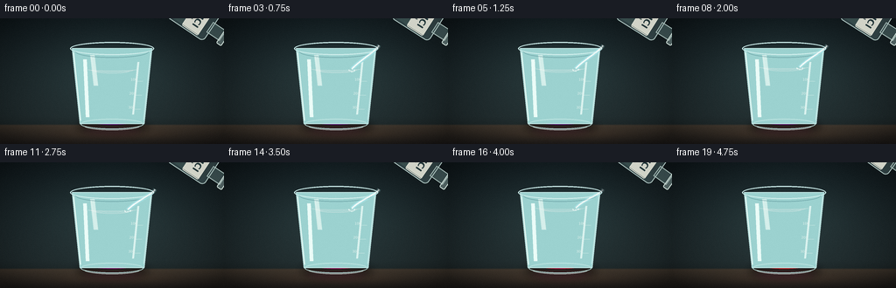
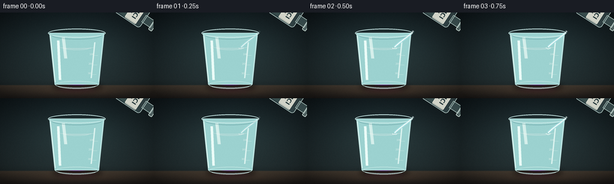

CODING AGENTS AS PIXEL WORLD MODELS
traex/DeepSeek-V4.1-Flash · phygen_147
点击播放 · 原生 RGB 像素
逐轮保存的候选
回放视频、检查图与代码变化。
每份候选均可单独播放。实际图片检查记录在下方工具轨迹中。
候选 01播放与检查图
点击播放 · 原生 RGB 像素


展开代码变化
--- 上一保存版本
+++ 本次保存版本
@@ -0,0 +1,536 @@
+from pathlib import Path
+import math
+
+import numpy as np
+from PIL import Image, ImageDraw, ImageFilter, ImageFont
+
+import artifact_io
+
+
+W, H, N, FPS = 256, 144, 20, 4
+S = 4
+WS, HS = W * S, H * S
+CASE_DIR = Path(__file__).resolve().parent
+
+
+def clamp(value, low=0.0, high=1.0):
+ return max(low, min(high, value))
+
+
+def smoothstep(edge0, edge1, value):
+ if edge0 == edge1:
+ return float(value >= edge1)
+ x = np.clip((value - edge0) / (edge1 - edge0), 0.0, 1.0)
+ return x * x * (3.0 - 2.0 * x)
+
+
+def composite(base, overlay):
+ base_rgb = np.asarray(base.convert("RGB"), dtype=np.float32)
+ over = np.asarray(overlay.convert("RGBA"), dtype=np.float32)
+ alpha = over[:, :, 3:4] / 255.0
+ return Image.fromarray(
+ np.clip(base_rgb * (1.0 - alpha) + over[:, :, :3] * alpha, 0, 255).astype(np.uint8),
+ "RGB",
+ )
+
+
+def load_font(size, bold=True):
+ candidates = [
+ "/usr/share/fonts/truetype/dejavu/DejaVuSans-Bold.ttf" if bold else
+ "/usr/share/fonts/truetype/dejavu/DejaVuSans.ttf",
+ "/usr/share/fonts/truetype/liberation2/LiberationSans-Bold.ttf" if bold else
+ "/usr/share/fonts/truetype/liberation2/LiberationSans-Regular.ttf",
+ ]
+ for candidate in candidates:
+ if Path(candidate).is_file():
+ return ImageFont.truetype(candidate, size)
+ return ImageFont.load_default()
+
+
+def make_background():
+ y_axis = np.linspace(0.0, 1.0, HS, dtype=np.float32)
+ x_axis = np.linspace(0.0, 1.0, WS, dtype=np.float32)
+ x, y = np.meshgrid(x_axis, y_axis)
+
+ top = np.array([19, 29, 33], dtype=np.float32)
+ middle = np.array([36, 48, 50], dtype=np.float32)
+ bottom = np.array([25, 31, 32], dtype=np.float32)
+ lower_mix = np.clip(y / 0.84, 0.0, 1.0)
+ rgb = top * (1.0 - lower_mix)[..., None] + middle * lower_mix[..., None]
+ bottom_mix = np.clip((y - 0.78) / 0.22, 0.0, 1.0)[..., None]
+ rgb = rgb * (1.0 - bottom_mix) + bottom * bottom_mix
+
+ # A broad, cool laboratory light keeps the glass edges legible.
+ glow = np.exp(-(((x - 0.50) / 0.34) ** 2 + ((y - 0.42) / 0.33) ** 2))
+ rgb += glow[..., None] * np.array([11.0, 17.0, 16.0], dtype=np.float32)
+
+ # Countertop.
+ table_start = 0.842
+ table_mask = np.clip((y - table_start) / 0.012, 0.0, 1.0)
+ table_y = np.clip((y - table_start) / (1.0 - table_start), 0.0, 1.0)
+ table_top = np.array([72, 62, 51], dtype=np.float32)
+ table_bottom = np.array([33, 30, 28], dtype=np.float32)
+ table = table_top * (1.0 - table_y[..., None]) + table_bottom * table_y[..., None]
+ rgb = rgb * (1.0 - table_mask[..., None]) + table * table_mask[..., None]
+
+ # Subtle stone flecks and a warm reflected light on the counter.
+ rng = np.random.default_rng(21)
+ noise = rng.normal(0.0, 1.0, (HS, WS, 1)).astype(np.float32)
+ noise = np.asarray(
+ Image.fromarray(np.clip(noise[:, :, 0] * 16 + 128, 0, 255).astype(np.uint8)).filter(
+ ImageFilter.GaussianBlur(0.7 * S)
+ ),
+ dtype=np.float32,
+ )[:, :, None]
+ rgb += (noise - 128.0) * 0.038
+
+ reflection = np.exp(-(((x - 0.51) / 0.26) ** 2 + ((y - 0.925) / 0.045) ** 2))
+ rgb += reflection[..., None] * np.array([15.0, 9.0, 5.0], dtype=np.float32)
+
+ # Vignette, kept gentle so the small video does not lose shadow detail.
+ vignette = np.clip(
+ 1.0 - 0.48 * (((x - 0.5) / 0.67) ** 2 + ((y - 0.48) / 0.75) ** 2) ** 1.35,
+ 0.58,
+ 1.0,
+ )
+ rgb *= vignette[..., None]
+ return Image.fromarray(np.clip(rgb, 0, 255).astype(np.uint8), "RGB")
+
+
+BACKGROUND = make_background()
+
+
+def beaker_half_width(y):
+ t = np.clip((y - 36.0 * S) / (116.0 * S - 36.0 * S), 0.0, 1.0)
+ return (43.0 - 7.0 * t) * S
+
+
+def make_interior_mask():
+ mask = Image.new("L", (WS, HS), 0)
+ draw = ImageDraw.Draw(mask)
+ pts = [
+ (86 * S, 36 * S),
+ (170 * S, 36 * S),
+ (161 * S, 116 * S),
+ (95 * S, 116 * S),
+ ]
+ draw.polygon(pts, fill=255)
+ draw.ellipse((95 * S, 108 * S, 161 * S, 122 * S), fill=255)
+ return np.asarray(mask, dtype=np.float32) / 255.0
+
+
+INTERIOR = make_interior_mask()
+
+
+def make_liquid(frame_index):
+ p = frame_index / (N - 1)
+ surface = (58.0 - 6.2 * float(smoothstep(0.04, 0.92, p))) * S
+
+ yy = np.arange(HS, dtype=np.float32)[:, None]
+ xx = np.arange(WS, dtype=np.float32)[None, :]
+ cx = 128.0 * S
+ half = beaker_half_width(yy)
+ xn = np.clip((xx - cx) / np.maximum(half, 1.0), -1.15, 1.15)
+ yn = np.clip((yy - surface) / (116.0 * S - surface), 0.0, 1.0)
+
+ meniscus = 1.15 * S * np.clip(np.abs(xn), 0.0, 1.0) ** 8
+ liquid_mask = (INTERIOR > 0.01) & (yy >= surface - meniscus)
+ edge_fade = np.clip(INTERIOR * 1.7, 0.0, 1.0)
+
+ swirl = (
+ 0.115 * np.sin(2.0 * math.pi * (yn * 1.65 - p * 1.18 + 0.26 * np.sin(xn * 3.1)))
+ + 0.060 * np.sin(2.0 * math.pi * (yn * 3.4 + xn * 0.75 + p * 0.58))
+ + 0.035 * np.sin(2.0 * math.pi * (yn * 6.1 - xn * 1.15 - p * 1.7))
+ )
+ front = p * 1.78 - yn * 0.92 + 0.13 * xn + swirl
+ local_mix = smoothstep(0.10, 0.86, front)
+ global_mix = smoothstep(0.035, 0.90, p)
+ activation = smoothstep(0.015, 0.075, p)
+ mix = (0.62 * local_mix + 0.48 * global_mix - 0.10) * activation
+ mix += 0.20 * smoothstep(0.76, 1.0, p)
+ mix = np.clip(mix, 0.0, 1.0)
+
+ purple = np.array([0.36, 0.055, 0.49], dtype=np.float32)
+ magenta = np.array([0.72, 0.045, 0.34], dtype=np.float32)
+ red = np.array([0.91, 0.095, 0.12], dtype=np.float32)
+ first = smoothstep(0.0, 0.53, mix)[..., None]
+ second = smoothstep(0.44, 1.0, mix)[..., None]
+ color = purple * (1.0 - first) + magenta * first
+ color = color * (1.0 - second) + red * second
+
+ # Cylindrical shading and glass-edge absorption.
+ lateral = np.clip(1.0 - 0.17 * np.abs(xn) ** 2, 0.72, 1.0)
+ depth = np.clip(1.02 - 0.22 * yn, 0.76, 1.03)
+ color *= (lateral * depth)[..., None]
+
+ left_glint = np.exp(-((xn + 0.66) / 0.17) ** 2) * (0.65 - 0.28 * yn)
+ color += left_glint[..., None] * np.array([0.18, 0.16, 0.20], dtype=np.float32)
+ edge_blue = np.clip((np.abs(xn) - 0.72) / 0.28, 0.0, 1.0)
+ color = color * (1.0 - 0.18 * edge_blue[..., None]) + np.array(
+ [0.14, 0.30, 0.34], dtype=np.float32
+ ) * (0.18 * edge_blue[..., None])
+
+ # Meniscus catches the overhead light and reveals the changing hue.
+ surf_band = np.exp(-((yy - surface + 0.25 * S) / (1.45 * S)) ** 2)
+ surf_tint = np.array([0.78, 0.68, 0.82], dtype=np.float32) * (1.0 - 0.35 * mix[..., None])
+ surf_tint = surf_tint + np.array([0.92, 0.26, 0.29], dtype=np.float32) * (0.35 * mix[..., None])
+ color += (surf_band * (0.24 + 0.12 * mix))[..., None] * surf_tint
+
+ rgb = np.clip(color * 255.0, 0, 255)
+ alpha = liquid_mask * edge_fade * (0.93 + 0.035 * (1.0 - yn))
+ liquid = np.dstack([rgb, alpha * 255.0]).astype(np.uint8)
+ return Image.fromarray(liquid, "RGBA"), surface / S
+
+
+def draw_bubbles(layer, frame_index, surface):
+ draw = ImageDraw.Draw(layer, "RGBA")
+ p = frame_index / (N - 1)
+ rng = np.random.default_rng(731)
+ count = 15
+ for index in range(count):
+ phase = rng.random()
+ x0 = 103.0 + rng.random() * 50.0
+ radius = 0.55 + rng.random() * 1.45
+ travel = (phase + p * (0.72 + 0.2 * rng.random())) % 1.0
+ y = 113.0 - travel * (113.0 - surface - 2.0)
+ x = x0 + 1.8 * math.sin(2.0 * math.pi * (p * 1.4 + phase))
+ alpha = int(80 + 75 * math.sin(math.pi * travel))
+ rr = radius * S
+ draw.ellipse(
+ ((x - radius) * S, (y - radius) * S, (x + radius) * S, (y + radius) * S),
+ fill=(214, 238, 240, 18),
+ outline=(235, 250, 250, alpha),
+ width=max(1, int(0.45 * S)),
+ )
+ draw.arc(
+ ((x - radius) * S, (y - radius) * S, (x + radius) * S, (y + radius) * S),
+ 198,
+ 315,
+ fill=(255, 255, 255, min(220, alpha + 45)),
+ width=max(1, int(0.38 * S)),
+ )
+
+ # Foam at the acid impact point.
+ impact_x = 146.5
+ for index in range(9):
+ ang = 2.0 * math.pi * index / 9.0
+ wobble = 0.5 + 0.5 * math.sin(p * 17.0 + index * 1.9)
+ x = impact_x + 3.4 * math.cos(ang) * (0.55 + 0.35 * wobble)
+ y = surface + 0.9 + 1.0 * math.sin(ang) * (0.45 + 0.25 * wobble)
+ radius = 0.38 + 0.38 * wobble
+ draw.ellipse(
+ ((x - radius) * S, (y - radius) * S, (x + radius) * S, (y + radius) * S),
+ fill=(245, 252, 250, int(80 + 80 * wobble)),
+ )
+
+
+def rotate_point(point, center, degrees):
+ theta = math.radians(degrees)
+ c, s = math.cos(theta), math.sin(theta)
+ x, y = point[0] - center[0], point[1] - center[1]
+ return (center[0] + c * x - s * y, center[1] + s * x + c * y)
+
+
+def make_bottle(frame_index, mouth_target):
+ p = frame_index / (N - 1)
+ layer = Image.new("RGBA", (170 * S, 170 * S), (0, 0, 0, 0))
+ draw = ImageDraw.Draw(layer, "RGBA")
+
+ # Upright bottle is built once, then tilted as a rigid glass object.
+ body = (62 * S, 55 * S, 98 * S, 106 * S)
+ neck = (73 * S, 40 * S, 87 * S, 58 * S)
+ lip = (69 * S, 35 * S, 91 * S, 42 * S)
+ draw.rounded_rectangle(body, radius=5 * S, fill=(154, 201, 202, 56))
+ draw.rounded_rectangle(
+ (65 * S, 68 * S, 95 * S, 103 * S),
+ radius=3 * S,
+ fill=(170, 224, 216, 66),
+ )
+ draw.rectangle(neck, fill=(160, 210, 207, 68))
+ draw.rounded_rectangle(lip, radius=1.6 * S, fill=(194, 227, 220, 90))
+ draw.rounded_rectangle(body, radius=5 * S, outline=(211, 238, 231, 205), width=max(1, S))
+ draw.rectangle(neck, outline=(211, 238, 231, 190), width=max(1, S))
+ draw.rounded_rectangle(lip, radius=1.6 * S, outline=(230, 247, 239, 225), width=max(1, S))
+
+ # A compact white reagent label is readable even after downsampling.
+ draw.rounded_rectangle(
+ (64 * S, 64 * S, 96 * S, 86 * S),
+ radius=1.5 * S,
+ fill=(229, 231, 218, 232),
+ outline=(246, 247, 234, 235),
+ width=max(1, int(0.5 * S)),
+ )
+ font = load_font(10 * S, bold=True)
+ small_font = load_font(4 * S, bold=True)
+ draw.text((80 * S, 73 * S), "HCl", font=font, fill=(34, 54, 57, 245), anchor="mm")
+ draw.text((80 * S, 81 * S), "1 M", font=small_font, fill=(59, 76, 75, 235), anchor="mm")
+ draw.line(
+ ((66 * S, 60 * S), (66 * S, 102 * S)),
+ fill=(244, 252, 246, 145),
+ width=max(1, int(0.7 * S)),
+ )
+ draw.line(
+ ((95 * S, 60 * S), (95 * S, 98 * S)),
+ fill=(89, 150, 153, 90),
+ width=max(1, int(0.45 * S)),
+ )
+
+ angle = -124.0 + 1.8 * math.sin(2.0 * math.pi * p * 0.8)
+ center = (85 * S, 85 * S)
+ mouth_src = (80 * S, 36 * S)
+ rotated = layer.rotate(angle, resample=Image.Resampling.BICUBIC, expand=True)
+ rot_center = (rotated.width / 2.0, rotated.height / 2.0)
+ mouth_rot = rotate_point(mouth_src, center, angle)
+ mouth_rot = (
+ mouth_rot[0] + rot_center[0] - center[0],
+ mouth_rot[1] + rot_center[1] - center[1],
+ )
+ paste_x = int(round(mouth_target[0] * S - mouth_rot[0]))
+ paste_y = int(round(mouth_target[1] * S - mouth_rot[1]))
+ return rotated, (paste_x, paste_y)
+
+
+def cubic_point(t, p0, p1, p2, p3):
+ u = 1.0 - t
+ return (
+ u**3 * p0[0] + 3 * u**2 * t * p1[0] + 3 * u * t**2 * p2[0] + t**3 * p3[0],
+ u**3 * p0[1] + 3 * u**2 * t * p1[1] + 3 * u * t**2 * p2[1] + t**3 * p3[1],
+ )
+
+
+def draw_stream(scene, frame_index, mouth, surface):
+ p = frame_index / (N - 1)
+ strength = float(smoothstep(0.03, 0.11, p) * (1.0 - smoothstep(0.79, 0.90, p)))
+ if strength <= 0.001:
+ return
+
+ impact = (146.0, surface + 0.5)
+ path = [
+ cubic_point(
+ t / 70.0,
+ (mouth[0], mouth[1] + 0.7),
+ (mouth[0] - 1.5, mouth[1] + 5.5),
+ (impact[0] + 8.0, impact[1] - 9.0),
+ impact,
+ )
+ for t in range(71)
+ ]
+ path_px = [(x * S, y * S) for x, y in path]
+ layer = Image.new("RGBA", (WS, HS), (0, 0, 0, 0))
+ draw = ImageDraw.Draw(layer, "RGBA")
+ draw.line(
+ path_px,
+ fill=(164, 224, 228, int(58 * strength)),
+ width=max(1, int(4.8 * S)),
+ joint="curve",
+ )
+ draw.line(
+ path_px,
+ fill=(220, 244, 244, int(152 * strength)),
+ width=max(1, int(2.2 * S)),
+ joint="curve",
+ )
+ draw.line(
+ path_px,
+ fill=(252, 255, 251, int(220 * strength)),
+ width=max(1, int(0.75 * S)),
+ joint="curve",
+ )
+
+ # A few fluid highlights travel along the stream to make the pour active.
+ for bead in range(6):
+ phase = (bead / 6.0 + p * 1.65) % 1.0
+ idx = min(len(path_px) - 2, int(phase * (len(path_px) - 1)))
+ x, y = path_px[idx]
+ radius = (0.55 + 0.25 * math.sin(bead * 1.7)) * S
+ draw.ellipse(
+ (x - radius, y - radius, x + radius, y + radius),
+ fill=(255, 255, 253, int(150 * strength)),
+ )
+
+ # Impact crown and two small satellite droplets.
+ for k in range(7):
+ ang = math.pi + (k / 6.0) * math.pi
+ lift = 1.3 + 1.4 * (0.5 + 0.5 * math.sin(p * 23.0 + k))
+ x = impact[0] + 3.4 * math.cos(ang)
+ y = impact[1] + 0.7 - lift * math.sin(ang)
+ radius = (0.35 + 0.32 * (k % 2)) * S
+ draw.ellipse(
+ ((x - radius / S) * S, (y - radius / S) * S, (x + radius / S) * S, (y + radius / S) * S),
+ fill=(239, 251, 248, int(170 * strength)),
+ )
+ scene.alpha_composite(layer)
+
+
+def draw_glass(scene, surface):
+ draw = ImageDraw.Draw(scene, "RGBA")
+
+ # Soft glass body tint.
+ draw.polygon(
+ [(82 * S, 34 * S), (174 * S, 34 * S), (165 * S, 121 * S), (91 * S, 121 * S)],
+ fill=(156, 210, 208, 15),
+ )
+
+ # Rim, inner lip, base, and side walls.
+ draw.ellipse(
+ (80 * S, 27 * S, 176 * S, 42 * S),
+ outline=(205, 237, 235, 178),
+ width=max(1, int(1.35 * S)),
+ )
+ draw.arc(
+ (86 * S, 31 * S, 170 * S, 45 * S),
+ 2,
+ 178,
+ fill=(111, 166, 169, 105),
+ width=max(1, int(0.75 * S)),
+ )
+ draw.polygon(
+ [(82 * S, 34 * S), (91 * S, 121 * S), (165 * S, 121 * S), (174 * S, 34 * S)],
+ outline=(190, 228, 226, 125),
+ width=max(1, int(1.15 * S)),
+ )
+ draw.line(
+ ((84 * S, 39 * S), (92 * S, 117 * S)),
+ fill=(235, 252, 247, 150),
+ width=max(1, int(1.15 * S)),
+ )
+ draw.line(
+ ((172 * S, 39 * S), (164 * S, 116 * S)),
+ fill=(201, 235, 233, 92),
+ width=max(1, int(0.8 * S)),
+ )
+ draw.ellipse(
+ (92 * S, 115 * S, 164 * S, 127 * S),
+ outline=(190, 228, 225, 125),
+ width=max(1, int(1.1 * S)),
+ )
+ draw.arc(
+ (96 * S, 118 * S, 160 * S, 128 * S),
+ 8,
+ 172,
+ fill=(231, 247, 241, 115),
+ width=max(1, int(0.65 * S)),
+ )
+
+ # Two soft reflection bands on the front wall.
+ draw.polygon(
+ [(95 * S, 47 * S), (99 * S, 47 * S), (102 * S, 113 * S), (98 * S, 113 * S)],
+ fill=(235, 252, 248, 25),
+ )
+ draw.polygon(
+ [(157 * S, 50 * S), (159 * S, 50 * S), (153 * S, 110 * S), (151 * S, 110 * S)],
+ fill=(219, 243, 239, 17),
+ )
+
+ # Graduation marks on the right side.
+ mark_font = load_font(4 * S, bold=False)
+ for y, label in ((72, "100"), (88, "200"), (104, "300")):
+ half = 43.0 - 7.0 * ((y - 36.0) / 80.0)
+ xr = 128.0 + half - 2.4
+ draw.line(
+ ((xr - 9.0) * S, y * S, (xr - 2.0) * S, y * S),
+ fill=(235, 247, 241, 112),
+ width=max(1, int(0.45 * S)),
+ )
+ draw.text(
+ ((xr - 12.5) * S, (y - 2.0) * S),
+ label,
+ font=mark_font,
+ fill=(225, 240, 236, 84),
+ anchor="mm",
+ )
+
+ # Surface ripple lines, keyed to the slowly rising liquid level.
+ for index, dy in enumerate((0.5, 1.3, 2.2)):
+ rx = 28.0 - 4.0 * index
+ ry = 1.5 + 0.55 * index
+ draw.arc(
+ ((128.0 - rx) * S, (surface + dy - ry) * S, (128.0 + rx) * S, (surface + dy + ry) * S),
+ 5,
+ 175,
+ fill=(247, 242, 240, 54 - 10 * index),
+ width=max(1, int(0.42 * S)),
+ )
+
+
+def render_frame(frame_index):
+ p = frame_index / (N - 1)
+ scene = BACKGROUND.copy()
+ scene = scene.convert("RGBA")
+ draw = ImageDraw.Draw(scene, "RGBA")
+
+ # Cast shadow and a muted reflected glow beneath the beaker.
+ shadow = Image.new("RGBA", (WS, HS), (0, 0, 0, 0))
+ sdraw = ImageDraw.Draw(shadow, "RGBA")
+ sdraw.ellipse((87 * S, 116 * S, 171 * S, 132 * S), fill=(0, 0, 0, 104))
+ shadow = shadow.filter(ImageFilter.GaussianBlur(4.0 * S))
+ scene.alpha_composite(shadow)
+
+ glow = Image.new("RGBA", (WS, HS), (0, 0, 0, 0))
+ gdraw = ImageDraw.Draw(glow, "RGBA")
+ red_shift = int(32 * smoothstep(0.35, 1.0, p))
+ gdraw.ellipse(
+ (91 * S, 121 * S, 166 * S, 136 * S),
+ fill=(91 + red_shift, 28, 62 + red_shift // 2, 54),
+ )
+ glow = glow.filter(ImageFilter.GaussianBlur(5.0 * S))
+ scene.alpha_composite(glow)
+
+ # Beaker back glass.
+ back = Image.new("RGBA", (WS, HS), (0, 0, 0, 0))
+ bdraw = ImageDraw.Draw(back, "RGBA")
+ bdraw.polygon(
+ [(86 * S, 36 * S), (170 * S, 36 * S), (161 * S, 116 * S), (95 * S, 116 * S)],
+ fill=(142, 198, 198, 24),
+ )
+ scene.alpha_composite(back)
+
+ liquid, surface = make_liquid(frame_index)
+ scene.alpha_composite(liquid)
+
+ bubble_layer = Image.new("RGBA", (WS, HS), (0, 0, 0, 0))
+ draw_bubbles(bubble_layer, frame_index, surface)
+ scene.alpha_composite(bubble_layer)
+
+ draw_glass(scene, surface)
+
+ # Bottle lifts away only after the stream has stopped.
+ retreat = float(smoothstep(0.84, 1.0, p))
+ mouth = (177.0 + 15.0 * retreat, 30.5 - 10.0 * retreat)
+ bottle, paste = make_bottle(frame_index, mouth)
+ scene.alpha_composite(bottle, dest=paste)
+
+ draw_stream(scene, frame_index, mouth, surface)
+
+ # A narrow window reflection across the beaker ties glass and liquid together.
+ glint = Image.new("RGBA", (WS, HS), (0, 0, 0, 0))
+ gdraw = ImageDraw.Draw(glint, "RGBA")
+ gdraw.polygon(
+ [(103 * S, 42 * S), (108 * S, 42 * S), (112 * S, 77 * S), (107 * S, 77 * S)],
+ fill=(245, 255, 251, 22),
+ )
+ gdraw.line(
+ ((104 * S, 43 * S), (110 * S, 76 * S)),
+ fill=(250, 255, 252, 85),
+ width=max(1, int(0.45 * S)),
+ )
+ scene.alpha_composite(glint)
+
+ rgb = scene.convert("RGB").resize((W, H), Image.Resampling.LANCZOS)
+ arr = np.asarray(rgb, dtype=np.float32)
+ rng = np.random.default_rng(9000 + frame_index)
+ grain = rng.normal(0.0, 0.55, (H, W, 1)).astype(np.float32)
+ arr = np.clip(arr + grain, 0, 255)
+ return arr.astype(np.uint8)
+
+
+def main():
+ frames = np.stack([render_frame(index) for index in range(N)], axis=0)
+ artifact_io.save(frames, CASE_DIR)
+ print(f"saved {frames.shape[0]} frames at {W}x{H}, {FPS} fps")
+ print(f"mean frame luminance: {frames.mean(axis=(1, 2, 3)).round(2).tolist()}")
+ print(f"red-minus-blue trend: {(frames[:, :, :, 0].mean(axis=(1, 2)) - frames[:, :, :, 2].mean(axis=(1, 2))).round(2).tolist()}")
+
+
+if __name__ == "__main__":
+ main()
候选 02播放与检查图
点击播放 · 原生 RGB 像素

展开代码变化
--- 上一保存版本
+++ 本次保存版本
@@ -359,7 +359,7 @@
((x - radius / S) * S, (y - radius / S) * S, (x + radius / S) * S, (y + radius / S) * S),
fill=(239, 251, 248, int(170 * strength)),
)
- scene.alpha_composite(layer)
+ scene.paste(layer, (0, 0), layer)
def draw_glass(scene, surface):
@@ -456,7 +456,6 @@
def render_frame(frame_index):
p = frame_index / (N - 1)
scene = BACKGROUND.copy()
- scene = scene.convert("RGBA")
draw = ImageDraw.Draw(scene, "RGBA")
# Cast shadow and a muted reflected glow beneath the beaker.
@@ -464,7 +463,7 @@
sdraw = ImageDraw.Draw(shadow, "RGBA")
sdraw.ellipse((87 * S, 116 * S, 171 * S, 132 * S), fill=(0, 0, 0, 104))
shadow = shadow.filter(ImageFilter.GaussianBlur(4.0 * S))
- scene.alpha_composite(shadow)
+ scene = composite(scene, shadow)
glow = Image.new("RGBA", (WS, HS), (0, 0, 0, 0))
gdraw = ImageDraw.Draw(glow, "RGBA")
@@ -474,7 +473,7 @@
fill=(91 + red_shift, 28, 62 + red_shift // 2, 54),
)
glow = glow.filter(ImageFilter.GaussianBlur(5.0 * S))
- scene.alpha_composite(glow)
+ scene = composite(scene, glow)
# Beaker back glass.
back = Image.new("RGBA", (WS, HS), (0, 0, 0, 0))
@@ -483,22 +482,26 @@
[(86 * S, 36 * S), (170 * S, 36 * S), (161 * S, 116 * S), (95 * S, 116 * S)],
fill=(142, 198, 198, 24),
)
- scene.alpha_composite(back)
+ scene = composite(scene, back)
liquid, surface = make_liquid(frame_index)
- scene.alpha_composite(liquid)
+ scene = composite(scene, liquid)
bubble_layer = Image.new("RGBA", (WS, HS), (0, 0, 0, 0))
draw_bubbles(bubble_layer, frame_index, surface)
- scene.alpha_composite(bubble_layer)
-
- draw_glass(scene, surface)
+ scene = composite(scene, bubble_layer)
+
+ glass = Image.new("RGBA", (WS, HS), (0, 0, 0, 0))
+ draw_glass(glass, surface)
+ scene = composite(scene, glass)
# Bottle lifts away only after the stream has stopped.
retreat = float(smoothstep(0.84, 1.0, p))
mouth = (177.0 + 15.0 * retreat, 30.5 - 10.0 * retreat)
bottle, paste = make_bottle(frame_index, mouth)
- scene.alpha_composite(bottle, dest=paste)
+ bottle_patch = Image.new("RGBA", (WS, HS), (0, 0, 0, 0))
+ bottle_patch.alpha_composite(bottle, dest=paste)
+ scene = composite(scene, bottle_patch)
draw_stream(scene, frame_index, mouth, surface)
@@ -514,9 +517,9 @@
fill=(250, 255, 252, 85),
width=max(1, int(0.45 * S)),
)
- scene.alpha_composite(glint)
-
- rgb = scene.convert("RGB").resize((W, H), Image.Resampling.LANCZOS)
+ scene = composite(scene, glint)
+
+ rgb = scene.resize((W, H), Image.Resampling.LANCZOS)
arr = np.asarray(rgb, dtype=np.float32)
rng = np.random.default_rng(9000 + frame_index)
grain = rng.normal(0.0, 0.55, (H, W, 1)).astype(np.float32)
候选 03播放与检查图
候选 04播放与检查图
点击播放 · 原生 RGB 像素
展开代码变化
--- 上一保存版本
+++ 本次保存版本
@@ -29,8 +29,7 @@
over = np.asarray(overlay.convert("RGBA"), dtype=np.float32)
alpha = over[:, :, 3:4] / 255.0
return Image.fromarray(
- np.clip(base_rgb * (1.0 - alpha) + over[:, :, :3] * alpha, 0, 255).astype(np.uint8),
- "RGB",
+ np.clip(base_rgb * (1.0 - alpha) + over[:, :, :3] * alpha, 0, 255).astype(np.uint8)
)
@@ -94,7 +93,7 @@
1.0,
)
rgb *= vignette[..., None]
- return Image.fromarray(np.clip(rgb, 0, 255).astype(np.uint8), "RGB")
+ return Image.fromarray(np.clip(rgb, 0, 255).astype(np.uint8))
BACKGROUND = make_background()
@@ -179,7 +178,7 @@
rgb = np.clip(color * 255.0, 0, 255)
alpha = liquid_mask * edge_fade * (0.93 + 0.035 * (1.0 - yn))
liquid = np.dstack([rgb, alpha * 255.0]).astype(np.uint8)
- return Image.fromarray(liquid, "RGBA"), surface / S
+ return Image.fromarray(liquid), surface / S
def draw_bubbles(layer, frame_index, surface):
@@ -456,7 +455,6 @@
def render_frame(frame_index):
p = frame_index / (N - 1)
scene = BACKGROUND.copy()
- draw = ImageDraw.Draw(scene, "RGBA")
# Cast shadow and a muted reflected glow beneath the beaker.
shadow = Image.new("RGBA", (WS, HS), (0, 0, 0, 0))
@@ -521,7 +519,7 @@
rgb = scene.resize((W, H), Image.Resampling.LANCZOS)
arr = np.asarray(rgb, dtype=np.float32)
- rng = np.random.default_rng(9000 + frame_index)
+ rng = np.random.default_rng(9000)
grain = rng.normal(0.0, 0.55, (H, W, 1)).astype(np.float32)
arr = np.clip(arr + grain, 0, 255)
return arr.astype(np.uint8)
可观测工具轨迹
实际执行的命令与返回图片。
命令 1exit 0
/bin/bash -c "sed -n '1,240p' prompt.txt"
命令 2exit 0
/bin/bash -c "sed -n '1,280p' GENERATION_RULES.md"
命令 3exit 0
/bin/bash -c 'cat task_spec.json'
命令 4exit 0
/bin/bash -c "find . -maxdepth 2 -type f -printf '%p\\n' | sort | sed -n '1,240p'"
命令 5exit 0
/bin/bash -c "sed -n '1,280p' artifact_io.py"
命令 6exit 0
/bin/bash -c "sed -n '1,320p' player_template.html"
命令 7exit 0
/bin/bash -c "python - <<'PY' import importlib.util for m in ['numpy','PIL','cv2','imageio','matplotlib']: print(m, bool(importlib.util.find_spec(m))) PY"
命令 8exit 1
/bin/bash -c 'python generate.py'
命令 9exit 1
/bin/bash -c 'python generate.py'
命令 10exit 0
/bin/bash -c 'python generate.py'
命令 11exit 0
/bin/bash -c "python - <<'PY'
from PIL import Image
import numpy as np
chars=' .:-=+*#%@'
for fi in [0,5,10,15,19]:
im=Image.open(f'frames/{fi:02d}.png').convert('RGB').resize((80,45), Image.Resampling.LANCZOS)
a=np.asarray(im).astype(float)
lum=a.mean(2)
# autocontrast ascii
lo,hi=np.percentile(lum,[3,97]); z=np.clip((lum-lo)/(hi-lo),0,1)
print(f'FRAME {fi}')
for row in z:
print(''.join(chars[min(9,int(v*10))] for v in row))
PY"命令 12exit 0
/bin/bash -c "python - <<'PY'
from PIL import Image
import numpy as np
for fi in range(20):
a=np.asarray(Image.open(f'frames/{fi:02d}.png')).astype(float)
crop=a[54:120,88:168]
# liquid-ish pixels, saturated and non-background
mx=crop.max(2); mn=crop.min(2); sat=(mx-mn)/(mx+1e-3)
m=(sat>.28)&(mx>35)
q=crop[m]
print(f'{fi:02d} all R-G-B {crop.mean((0,1)).round(1)} liquid n={len(q):4d} mean={q.mean(0).round(1)} sat={sat[m].mean():.2f}')
PY"命令 13exit 0
/bin/bash -c "python - <<'PY'
from PIL import Image
import numpy as np
for fi in [0,9,19]:
a=np.asarray(Image.open(f'frames/{fi:02d}.png')).astype(float)
print('frame',fi)
for y in range(62,117,6):
q=a[y,98:158]
mx=q.max(1); mn=q.min(1); sat=(mx-mn)/(mx+1e-6)
m=sat>.20
print(y, 'n',m.sum(),'mean',q[m].mean(0).round(1) if m.any() else None,'sat',sat[m].mean().round(2) if m.any() else None)
PY"命令 14exit 0
/bin/bash -c "python - <<'PY'
from PIL import Image
im=Image.open('frames/00.png').convert('RGB')
for xy in [(128,80),(110,80),(140,80),(120,65),(130,100),(30,30),(200,20)]: print(xy,im.getpixel(xy))
PY"命令 15exit 0
/bin/bash -c 'python generate.py'
命令 16exit 0
/bin/bash -c "python - <<'PY'
from PIL import Image
import numpy as np
for fi in [0,5,10,15,19]:
a=np.asarray(Image.open(f'frames/{fi:02d}.png')).astype(float)
crop=a[54:120,88:168]
# avoid glass highlights and bottle: interior area
inner=a[65:112,100:156]
mx=inner.max(2);mn=inner.min(2);sat=(mx-mn)/(mx+1e-3)
m=(sat>.22)&(mx>20)
q=inner[m]
print(fi, 'px',inner.mean((0,1)).round(1),'liquid n',len(q),'mean',q.mean(0).round(1),'max',q.max(0).round(1))
PY"命令 17exit 0
/bin/bash -c "python - <<'PY'
from PIL import Image
import numpy as np
for fi in [0,5,10,15,19]:
im=Image.open(f'frames/{fi:02d}.png').convert('RGB').resize((96,54),Image.Resampling.LANCZOS)
a=np.asarray(im).astype(float)
lum=a.mean(2); lo,hi=np.percentile(lum,[2,98]); z=np.clip((lum-lo)/(hi-lo),0,1)
chars=' .:-=+*#%@'
print('\\nFRAME',fi)
for row in z:
print(''.join(chars[min(9,int(v*9.999))] for v in row))
PY"命令 18exit 0
/bin/bash -c "python - <<'PY'
from pathlib import Path
from PIL import Image
import numpy as np, json
spec=json.loads(Path('task_spec.json').read_text())
files=sorted(Path('frames').glob('*.png'))
a=np.stack([np.asarray(Image.open(p).convert('RGB')) for p in files])
print('frames',a.shape,'dtype',a.dtype,'range',int(a.min()),int(a.max()))
print('expected',spec['frames'],spec['width'],spec['height'])
print('changed pixels frame-to-frame',[int(np.any(a[i]"'!=a[i-1],axis=2).sum()) for i in range(1,len(a))])
print('"'artifacts',[(p.name,p.stat().st_size) for p in [Path('pixels.npz'),Path('index.html'),Path('inspection.png'),Path('transition_check.png')]])
print('nonblank frame std',a.std(axis=(1,2,3)).round(2).tolist())
PY"命令 19exit 0
/bin/bash -c 'command -v chafa || true command -v viu || true command -v jp2 || true command -v ffmpeg || true command -v chromium || command -v chromium-browser || command -v google-chrome || true'
命令 20exit 0
/bin/bash -c 'git status --short 2>/dev/null || true'
命令 21exit 0
/bin/bash -c 'python generate.py'
命令 22exit 1
/bin/bash -c "python - <<'PY'
from pathlib import Path
from PIL import Image
import numpy as np, json
spec=json.loads(Path('task_spec.json').read_text())
files=sorted(Path('frames').glob('*.png'))
a=np.stack([np.asarray(Image.open(p).convert('RGB')) for p in files])
assert a.shape == (spec['frames'], spec['height'], spec['width'], 3)
assert a.dtype == np.uint8
assert all(np.any(a[i] "'!= a[i-1]) for i in range(1,len(a)))
# Interior color means should move from purple to red.
inner=a[65:112,100:156].astype(float)
blue_red=inner[:,:,:,0].mean((1,2))-inner[:,:,:,2].mean((1,2))
assert blue_red[0] < -20 and blue_red[-1] > 80
for name in ['"'pixels.npz','index.html','inspection.png','transition_check.png']:
assert Path(name).is_file() and Path(name).stat().st_size > 0
print('validation passed')
print('shape:',a.shape,'frame bytes:',a.nbytes,'interior red-minus-blue:',blue_red[[0,5,10,15,19]].round(1).tolist())
PY"命令 23exit 0
/bin/bash -c "python - <<'PY' import generate for fi in [0,10,19]: p=fi/19 retreat=float(generate.smoothstep(0.84,1.0,p)) mouth=(177.0+15.0*retreat,30.5-10.0*retreat) bottle,paste=generate.make_bottle(fi,mouth) print(fi,'bottle',bottle.size,'paste',paste,'right',paste[0]+bottle.width,'bottom',paste[1]+bottle.height,'mouth',mouth) PY"
命令 24exit 0
/bin/bash -c "python - <<'PY'
from pathlib import Path
from PIL import Image
import numpy as np, json
spec=json.loads(Path('task_spec.json').read_text())
files=sorted(Path('frames').glob('*.png'))
a=np.stack([np.asarray(Image.open(p).convert('RGB')) for p in files])
assert a.shape == (spec['frames'], spec['height'], spec['width'], 3), a.shape
assert a.dtype == np.uint8
assert all(np.any(a[i] "'!= a[i-1]) for i in range(1,len(a)))
inner=a[:,65:112,100:156].astype(float)
blue_red=inner[:,:,:,0].mean((1,2))-inner[:,:,:,2].mean((1,2))
assert blue_red[0] < -20 and blue_red[-1] > 80, blue_red[[0,-1]]
for name in ['"'pixels.npz','index.html','inspection.png','transition_check.png']:
assert Path(name).is_file() and Path(name).stat().st_size > 0
print('validation passed')
print('shape:',a.shape,'interior red-minus-blue:',blue_red[[0,5,10,15,19]].round(1).tolist())
print('changed pixels:',[int(np.any(a[i]"'!=a[i-1],axis=2).sum()) for i in range(1,len(a))])
print('"'artifacts:',[(p,Path(p).stat().st_size) for p in ['pixels.npz','index.html','inspection.png','transition_check.png']])
PY
python -m py_compile generate.py"保存候选 4 份；完成命令 24 次；可验证图片返回 0 张。原始 API 响应与完整日志保留在本地。